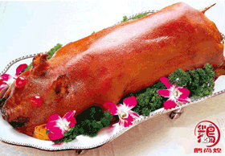
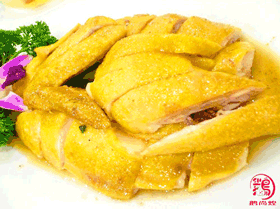

烧腊培训
传承独门百年秘方的鹅尚煌烧腊培训，内容丰富多样：烤乳猪、麻皮烤乳猪、烧肉叉烧等广式烧腊教学培训。从选材—备料—秘方的调制—制作成品—成品切配—保存等独家秘方与技巧全部毫无保留的传授。烧出的脆皮乳猪色泽大红，油光明亮，皮脆酥香，肉嫩鲜美，风味独特。 全程实物操作，手把手教学，学会为止。中间决不重复收费 。在学成之后仍可免费得到技术指导和技术升级的支持，让您彻底解决后顾之忧。
烧鹅培训
秉承传统瓦缸烧制法的鹅尚煌，带你领略最传统，最正宗的特色瓦缸烧鹅制发。古色古香，独特风味。而且烧鹅配方为百年老方，味道正宗且只此一家。瓦缸烧制出的烧鸭色泽红艳，油润光亮，皮香脆，肉质滋嫩鲜甜，松脂味清香醇浓。课程 免费提供原料完全实操 ，一步到位。 学习内容多样，原料免费提供 ，更有特色广式烧鹅、深井烧鹅、古井烧鹅、吊烧琵琶鸭等等特色烧鹅做法教学培训。

盐焗鸡培训
鹅尚煌特色盐焗鸡系列教学培训，从盐焗鸡每步细节开始教起， 从购买原材料、配方组合、熬制高汤、煮制正宗盐焗鸡，到成品保鲜、包装。每步讲解 在继承传统盐焗鸡制作工艺的基础上，将各种分散的制作工艺和自制配方等融合到一起，分为了：正宗盐焗鸡、特色咸香盐焗鸡、盐焗手撕鸡、盐焗鸡翅鸡爪等。保留了鸡肉丰富的营养价值，味香浓郁，皮脆肉嫩，外表澄黄油亮，鸡香清醇，而且香而不腻，爽滑鲜嫩。